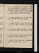
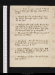

- About
- Diary
- People
- Events
- Reading
- Writing
- Meals
- Meetings
- Search

Jan. 1. 1791. Sa. Siege of Belgradee
Jan. 2. Su. Dine at Holcrofts.
3. M.Remove to Titchfield Streete
5. W.Call on col. Barry, Mrs Webb & miss Williams: n a h.
6. Th.Dine at B. Hollis's, seul.
Jan. 9. M. eCall on Edwards: dine at Mr Holcroft's: sup with him & Davison, at Fenwick's.
11. Tu.Dine at B. Hollis's, with Price, Kippis, Rees, Belcham, Geddes, Lindsey, Thorkelin & Dodson.
15. Sa. Call on Mrs Webb (n a h), & Mr Barry.
Jan. 16. Su. Write to Dr Lister
21. Fr. Dine at Robinson's, with Dr Wallis: sup at Fenwick's, with Ht.
Jan. 33. Su. eTea Mr Holcroft's: write to Dr Lister.
28. F. Call on Paradise: see col. Smith
Jan. 30. Su. Dine at Holcroft's: sup with him at Bemetzrieder's.
2. W. Call of B. Hollis, 4 o'cl.: n. a. h. Ht sees the ds of De.
4. F. School for Arrogancee. Story of B. F.
Su. Feb. 6. Dine at Holcroft's: sup with him at Fenwick's.
8. Tu. M. to the paperse. School for Arrogancee.
Feb. 13. Su. Dine at Holcroft's with Crosdil. P. of W. negotiated yesterday a loan of £300,000 in Holland, Portland & Fitzw. Securitiese. C.
14. Tu M. J. Hollis calls: dine at Dr Lister's with him & R. Solly
17. Th. Burke swears himself 60, to disqualify for election committeese.
22. Tu. Paine's pamphlet appearse
27. Su. Call on Paine31. Dine at Fenwick's with Holcroft & Henderson: Cocket.
2. W. Dine at B. Hollis's, with Jennings & Disney: borrow Painee. John Wesley dies
4. F. Mr Edwards calls.
5. Sa. Dine at B. Hollis's, with Nichols, Preston, Disney, Thorkelin & a Dane
8. Tu. Call on Dr Lister & B. Hollis. Dine at Holcrofts.
11. F. Tea miss Williams's, with Scott MD, Baillie MD, Jerningham, Aboyne, & mes Weston & J Hunter.
12. Sa.La Bella Pescatrice, with Amphion & Thaliee. Hear from Dr Lister.
Mar. 13. Su. J. Hollis calls
15. Tu.Dine at Robinson's(): tea J Hollis's.
16. W. Robinson calls: proposes a Naval Historye.
19. Sa.Write to Robinson: propose £1050, i. e. £525 per volumee
Su. Mar. 20. Dine at Holcroft's
22. Tu. Rehearsal at the Haymarket Il Pirro, & Orféee.
25. F. Demêlé avec Robinsone: call on J. Hollis.
Mar. 27. Su. Dine at Holcroft's: tea with him at Nicholson's.
Apr. 1. F.J. Hollis calls
2. Sa. Dine at Holcrofts Mirabeau dies
Apr. 3. Su.Call on Nicholson & J Hollis. Holcroft sups.
5. Tu.Dine at Holcrofts, with Crosdil, Nicholson, Otley, Rigg, Abbot, Marshal & Bossy.
7. Th.Curioni calls. Dine at J Hollis's, with Lewis, C. L.
Apr. 10. M. Su. Dine at Holcroft's
11. M.Dine at B. Hollis's, with J H., Taylor, Jennings, a smiler & a Swiss.
14. Th. Curioni calls. Lorenzo.
16. Sa. Tea J Hollis's.
Apr. 17. Su.Dine at Holcroft's: sup with him at Nicholson's.
19. Tu. ditto. 88 to 163 Dr Price dies.
Apr. 24. Su. Dine at Holcrofts.
May 1. Su.Hear dr Priestley's funeral sermon for dr Pricee
3. Th.Dine at J. Hollis's, with Priestley, Lindsey, Belsham, & dr Lister Revolution of Polande
6. F.Misunderstanding of Fox & Burke. House of Commonse.
May 8. Su.Dine at Holcroft's with Fenwick.
10. Tu.Belle's Stratagem & Figaroe.
13. F. Tea miss Williams's, with Gen. Melvile, Robertson, Lewis, Aboyne, Mes Douglas, Marriot & Paisley.
14. Sa. Dine at B. Hollis's. Scott, a believer in spiritual intercourses lends Paine £40, to aid the publication of his pamphlet, suspended for want of money. (Lewis.) H. Tooke states to the Const. Soc.Paine's offer of £300. (B. Hollis.)e
May 15. Su.Holcroft & Mercier dine: tea Mr Evans.
May 22. Su. Call on J Hollis
May 29. Su. Dine at Holcrofts
June 5. Su.Dine at Holcrofts
8. W. Call on B. Hollis, 4 o'clock: nah. see Planta. Mr Dundas, Secretary of Statee
11. Sa.Dine at B. Hollis's; tea with him, Charlesworth & Kingsbury, at Disney's.
June 12. Su.Dine at Holcroft's: tea with him at Nicholson's.
June 19. Su. Dine at Holcrofts
21. Tu.Finish Irish history. Flight of the king of Francee
25. Sa. Kentish Baronse: dine at Holcrofts

July 3. Su. Dine at Holcroft's: sup with him at Fenwicks
7. Th.Dine at Holcrofts, with Clementi, Shield, Bishop, Bossy & Otley.
July 9. x Su.eDine at Holcrofts.
13. W.Dr Lister prescribes for mee.
14. Th.Crown & Anchor: Rous & Merry: B. Hollis, Shore, Barbauld, Disney, Jennings, Rees, Morgan, Lindsey, Lewise. Fawcet sups
15. F. Sup at Nicholson's, with Holcroft. K. of France acquitted: 970 to 8e
July 17. Su. Dine at Holcrofts. Tumults at Parise.
19. T. Call on Dr Lister: dine at Holcs.
July 24. Su.Dine at Holcrofts
26. Tu.Call on Dr Lister—begin Domestic.e
July 31. Su. Dine at Holcrofts
2. Tu.Call on Lister & Mrs Webb
Aug. 7. Su.Dine at Holcrofts: Hull Godwin in town
9. Tu. Call on Dr Lister: Finish N. A. R.
Aug. 14. Su.Dine at Holcrofts: sup with him at Fenwick's.
16. Tu. Call on Dr Lister: Hull returns
Aug. 21. Su.Dine at Holcrofts
26. F.Mrs Cooper in town
Aug. 28. Su.Call on Robinson: Hamilton 72, Robinson 55 or 56.
31. W. Holcroft dines, Fawcet expected: demêlée. Faintnesse.
Sep. 4. Su. Dine at Holcrofts. Finish N. A. R.
5. M. Walk to Hampton Court, with Dyson
6. Tu.
7. W. It was in this year that I read & criticised The Simple Story in ms. The year before.
8. Th.
9. F.
10. Sa.
Sep. 11. Su.
12. M.
13. Tu.
14. W.
15. Th.
16. F.
17. Sa.


No. IV.

Sep. 4. Su.Finish N A R. Dine at Holcroft's
5. M. Hampton Court with Dyson. Abraham dines. Barth. Faire.
6. Tu. Read Plato by Spens, 2 dialogues. fatiguee.
7. W. Call on Holcroft, nah. Plato, dialogues 3 & 4.
8. Th. Read Rousseau on Poland. Nat// calls. head ache. Patriot & False Alarm.
9. F. Continue Rousseau. Falkland's Islands head ache. Dyson calls.
10. Sa. Finish Rousseau. head ach over right eyee. sup at Holcroft's.

Sep. 11. Su. Contrât Social, liv. I. Hume Original Contract. Eye ache. Dine at Holcroft's.
12. M.Part of Hume on Morals: of Paley's Philosophy: of Mackintosh. Taxation no Tyranny.
13. Tu. Mackintosh: De l'Homme. Dix Mille. Tea at Nicholson's with Holcroft , leur démêlée; Libels, orig. Contract.
14. W. Inégalité parmi les Hommes.
15. Th. Write 3 pages. VespereDyson. Rollin on Sparta
16. F. Hume on Polygamy & Climate: Mitford on Sparta: Priestley versus Reid. Holcroft reads 3, sup chez lui.
17. Sa.Write 5 pages. De l'Homme

Sep. 18. Su.Write 2 pages. Holcroft dines; identity. Read the Traveller.
19. M.Write 3 1/2 pages. Deserted Village & Retaliation.
20. Tu. Write 2 pages. Raynal on South America. Throate.
21. W. Burke on Paraguay. Write 1 page. Fawcet dines; talk of genius & virtue, & of Christianity.
22. Th.Write 1 page. Read Inégalité: M. R. of Condillac. Warm weather. Indisposede.
24. F. eWrite 1 page twice. German Hotel.
24. Sa.Transcribe do. Inégalité. Languore. sup in Thr. Street.
Sep. 25. Su.Write 3 1/2 pages. Dine at Holcroft's with Fenwick: adv. Dyson.
26. M.Dine at Holcrofts; read together Introduction. M. R. of Falconer on Climate.
27. Tu. Rewrite a paragraph. Tea at Nicholson's: talk of rhetoric. Dyson calls. Hume's Essays.
28. W. Write 5 pages. Dix Mille. Hume's Essays.
29. Th.Write 2 pages. Tea at Nicho Dix Mille.
30. F.Write 2 pages. Tea at Nicholson's; criticise the Introduction; talk of économistes, taxation & commerce.
Oct. 1. Sa.Return // to the Introduction; write 5 pages.
Oct. 2. Su.Holcroft reads: write 1 page. Dine at Holcroft's, sup with him at Fenwick's.
Cut off my haire. Correct. Otton & Holcroft at tea.
5. W.Correct. Robinson calls. Dyson calls; self interest.
6. Th.Robinson calls. Systême Social.
7. F. Systême Social: Frederic. Holcroft sups.
8. Sa. Notes for Holcroft on a God. Frederic.

Oct. 9. Su. Frederic. Dine at Holcroft's, with Fenwick: adv. Dyson.
12. W.Write an article of Fred. for M. R. Robinson calls: Dyson calls. J Hollis calls.
13. Th.Fawcet calls: Dyson calls. Systême Social: Hist. de mon Tems.
14. F.Write 2 1/2 pages. Dine at J. Hollis's, w. dr Lister: adv. Barry. talk of Pearson, of his character & of Dyson. Holcroft sups, talk of viande, &c.
15. Sa.Indisposede. Read Systême Social & Hist de mon Tems. Call on J Hollis.
Su.16. Su.Holcroft's Novel: Dyson dines: talk of self interest.
18. Tu. Call on Barry: Hist. de mon s Tems. Holcroft sups.
19. W. Dine with Fawcet at North End: shew him letters to Fox & Sheridane: talk of property, of Helvetius & his profession. Priestley offendede. Read Fred. on Government.
20. Th.Hist de mon Tems: storms.
21. F. Holcroft calls 1, 2, 3. Systême Social: Frederic.
22. Sa.Condorcet's Life of Voltaire, en partie
Oct. 23. Su.Dine at Holcroft's: adv. Dyson: owns himself convinced
24. M.Dom Chaudon: Commentaire Histore. Extreme cold.
25. Tu. do. Holcroft sups. Rain.
26. W.Villette's Life of Voltaire. Rain.
27. Th.Le Mondain. Appeal to the Old Whigs. Dyson calls.
29. Sa.Appeal: miss G. dines, Holcroft sups. Guillaume Vadé.

Oct. 30. Su. Appeal: Tucker. 3 brothers dine{.}sup at Holcrofts, with Dyson.
31. M.Tucker: Poesies de Voltaire. Call on dr Barrow.
Nov. 1. Tu.Locke: Voltaire. T. goes to schoole. Holcroft sups.
2. W.Locke: Voltaire. Dine at Holcrofts, with Pethion. Burke's Speech 1774. Talk of constituante, oaths & property.
3. Th. Cal Henley calls. Finish Speech 1774.
4. F. Call on B. Hollis, Henley, Robinson & Mrs Webb. Dine at the London Tavern, With Paine, Pethion, Horne Tooke, Priestley, Kippis, Rees, B. Hollis, Listers, Morganse. Birmingham Trialse.
5. Sa.Breakfast with Pethion. Seek Paine's Addresse. Call on Jacob. Talk of Mrs John J., revolutions & religion. Talk at P. n's of Mirabeau & immortality. Notoriety. Sup at Otley's w. Holcroft{.} Birmingham Trialse.

Nov. 6. Su.Dyson calls. Dine at Holcroft's: call on Fenwick. Birmingham Trialse.
7. M.Transcribe 5 pages. Holcroft at tea. Pucelle. Write to Paine
8. Tu.Transcribe 1 page. Call on Mrs Jacob, fr. Read Locke: Burke's Speech 1775: Pucelle: Birmingham Trialse
9. W.Write 1 1/2 pages. Dine at Bosse's, with Dr Knox, Wishart & Holcroft. Speech 1775: Sillery, Leçons. Holcroft at tea.
10. Th.Price on Morals: write notes on Chap. 8. Preface to Marmontel. Sup at Holcroft's. Sillery.
11. F.Hot & cold after breakfaste. J. Hollis calls; tells me of my want of abilitye.Common Sense: Pucelle. Write a sentence. Hear from Paine. Call on Jacob.
12. Sa.Holcroft calls. Pucelle. Write 1/2 a page, transcribe 2 pages with correction. Dyson & Dibbin cal at tea; talk of property, politics, religion & immortality.
Nov. 13. Su.Correct. Dyson & Dibbin call; // talk of virtue & disinterest. Dine at Johnson's, with Paine, Shovet & Wolstencraft; talk of monarchy, Tooke, Johnson, Voltaire, pursuits & religion. Sup at Holcroft's:
14. M. Speech 1775: Pucelle: revise the School for Arrogance. Nat[n?] at tea. Weather.
15. Tu. Costivee. Chap. du Luxe: Pucelle: Sillery. Call on J Hollis: Mrs Cooper at tea.
16. W.Chap. du Luxe: Pucelle. Translate 3 pages for M: write to C. Indisposede. Coeur de Lione
17. Th. Indisposede, weather. Pucelle Dyson dines. Chap. du Luxe, notes. Write 1 page: correct.
18. F.Pucelle. Write 2 1/2 pages. Faintnesse. Revise School for Arrogance. Holcroft sups.
19. Sa.Write 2 pages: transcribe 2. J Hollis calls, talk of Paine & Priestley. Pucelle.
Nov. 20. Su.Write 1/2 page: correct do. Pucelle. Dine at Holcrofts: adv. Miss Cooper & Dyson. weather.
21. M.Pucelle, &c. Tea at Marshal's. Read the Widow. Holcroft calls. weather. Temple du Gout.
22. Tu.Holcroft calls: talk of the Widow. Webb calls: talk of necessity, virtue & perception. Call on Jacob, fr. Sup at Hollis's, talk of David, Canaanites & the use of conversation.
23. W.Rhubarbe. Pucelle: Temple du Gout: V. peint par Lui Mêmee.
24. Th.Rhubarbée: Pucelle: Pentateuch. Sup at Jacob's; talk of monopoly, Paine's bridge & theory; apologise to Mmee.
25. F.Call on W Webb, n. a. h. Call on Barry; talk of aristocracy. Pentateuch. Holcroft calls. Dictionnaire Philosophique.
26. Sa.Pentateuch: Joshua. Tea at Holcroft's; talk of Moses.

Nov. 27. Su.Write 3 duod. pages of Moses. correct. Holcroft reads. Dine chez lui: tea at Fenwick's: sup at Nicholson's, talk of self interest, Paine's bridge.
28. M. Transcribe 4 pages: correct: write 1. Pucelle. John sups. Dict. Phil.
29. Tu.Pucelle. The Widow. sup at Holcroft's
30. W.Holcroft calls. Otton calls. Mrs Cooper dines & sups. Holcroft at tea: un peu de démêlé sur Davise.
Dec. 1. Th.Medite. Dyson dines.
2. F.J Hollis calls, talk of Moses. Otton calls, do. Read Pucelle: Bossuet: P. Pindar's Remonstrce: Rhubarbe.
3. Sa.Call on W. Webb, n a h. The Widow. A Day in Turkey, sit with Stonee.
Dec. 4. Su.Widow. Dine at Holcrofts. Call at Fenwick's, nah. You lie entre C. & De .
5. M.Medite. Montesquieu: Hume: Pucelle: Dict. Phil.
6. Tu.Write 1 1/2 pages. Revise the Widow. Sup at Holcrofts. Montesquieu: Johnson's Origin of Evil.
7. W.Write 2 pages: correct. Origin of Evil. Write twice to Holcroft on the Widow. Pucelle.
8. Th.Write 1 page: correct. Holcroft calls with a scene. Montesquieu: Pucelle. D. writes to C .
9. F.Write 1 page: correct. Holcroft calls with a scene: iterim. Montesquieu: Pucelle. Snow
10. Sa.Correct. Holcroft calls & reads. Montesquieu: School for Scandal: Mrs Jordan in Roxolae.
Dec. 11. Su. Montesquieu. Dine at Holcroft's. Sup with him at Fenwick's. Metromanie, Act. 1{.} extreme cold.
12. M. Metromanie. Dyson après diner. Do & Holcroft at tea.
13. Tu.Livy, speeches of Junius & Torquatus: Lodgingse. Speeches, Soho school. Speech of Marius in Sallust.
14. W.Write 6 pages on rights of man, &c. Metromanie.
15. Th.Holcroft calls. Metromanie: Courses de Tempé: Analyse de la Rep. de Platon: Pucelle. Indisposede.
17. Sa.Call on Robinson: on Webb, talk of truth, oaths, monasteries & property: & on Lister, nah. Mrs Cooper dines: Holcroft at tea. Read Anna, 5.
Dec. 18. Su. Anna, Vol. 5. Call on Mrs Jones and Mrs Shield. Dine at Holcroft's: adv Dyson & Pinard, talk of self love.
19. M.GiddinesseDyson calls. Holcroft calls, talk of Anna. Read Law on Perfection.
20. Tu. Hume's Orig. Contract. Write 1 1/2 pages. Dine at Jacob's. Holcroft sups, talk of Plato. Cymon.
21. W.Write 6 pages. Read Cymon.
22. Th.Write 5 1/2 pages. Dyson dines. Holcroft calls au matin & at tea.
23. F.Pucelle. Write 9 pages. Holcroft at tea
24. Sa.Write 6 pages: aground in init. Pt III. Read Tucker, & Locke.
Dec. 25. Su. Write 3 1/2 pages. Dine at Mrs Webb, with W., Mr& Mrs N Webb , Mr & Mrs Jones & Dr Sutton. talk literature & politics.
26. M.Transcribe. Consult Price on Liberty. Notes. Indigestione.
27. Tu.Holcroft at tea. Condorcet on Deceit. Indigestione.
28. W.Call on Robinson, fr. Removee.
29. Th. Write 3 1/2 pages: transcribe 1 1/2 with corrections.
30. F.Write 1 page: transcribe& correct 3 . Condorcet on Deceit.
31. Sa.Write 1 page: transcribe 1. Sup at miss Godwin's, talk of selfishness & justice.
Contact --  -- Cookies/Privacy
-- Cookies/Privacy